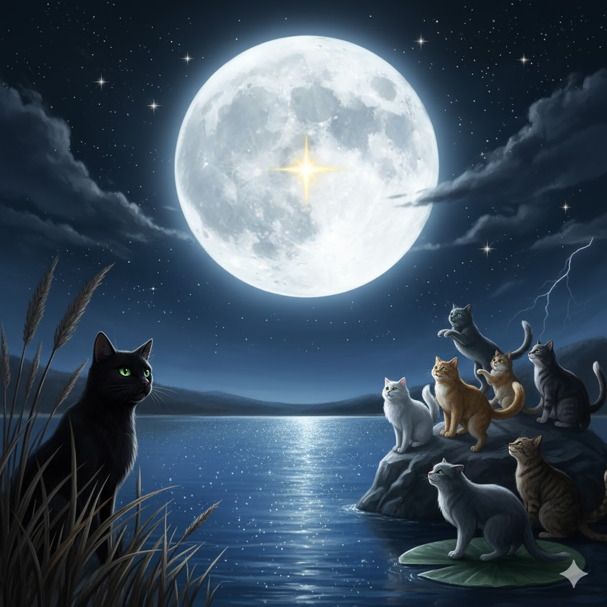
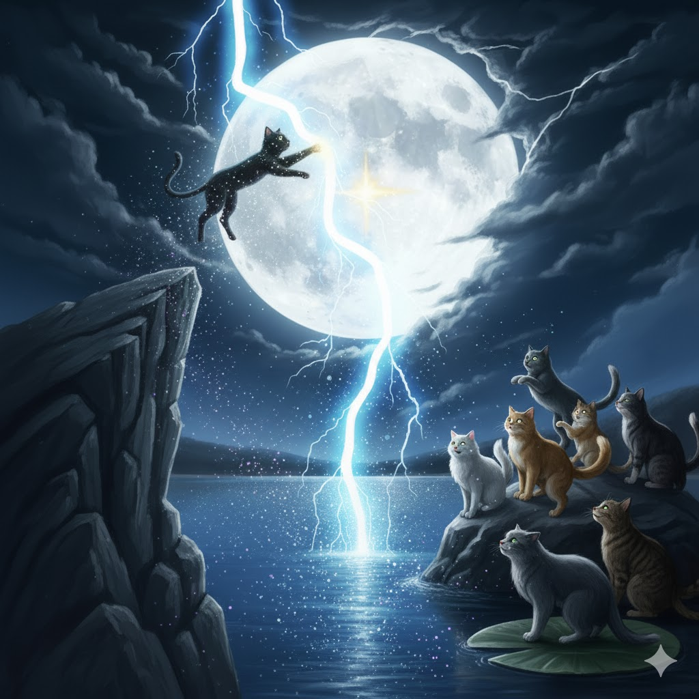

Moonlit sky
The moon climbed into the sky, big and round like a saucer of milk. It poured its silvery light all across the lake, making the water's surface dance.
The sky was already dotted with faint stars, but as the moon reached its highest peak, they began to blaze with sudden, brilliant light. Some flared into bold, dazzling points, while others awoke as tiny, shy specks, turning the night sky into a glittering map of possibilities.
Storm, a sleek shadow watching from the reeds, felt a familiar tingle in her whiskers. Her tail gave a slow, knowing swish. She knew how this went. She knew the challenge: if a cat could touch the one star that pulsed with a soft, silvery light, they would get stardust wings, but only for one night. It was their only chance to fly to the mysterious rip in the sky. If they failed, they would tumble back to the ground.
Tonight, cats from all the different clans would come. She saw a fluffy white cat from the Cloud clan appear near the tall pines. A sleek cat from the Sea clan shook water from its paws at the shore. Soon, cats from the Storm, Sun, Rock, and Sunset clans had all gathered, their eyes scanning the sparkling heavens, searching for the pulsing star.
A quiet tension filled the air. Every cat stood poised, muscles coiled, their gazes locked on the sky. They all wanted the same thing. If a cat could leap and just barely touch the right star, they would get wings made of pure stardust, but only for one night. With those wings, they could fly to the mysterious, dark rip in the sky. But if they failed, or touched the wrong one, they would simply tumble back down to the ground.
The stars finally settled into their places. The challenge was beginning.
The attempts came in a flurry of hopeful leaps. A powerful Sun clan cat sprang for a dazzlingly bright star, landing empty-pawed. Another launched from a tall boulder toward a twinkling light, but it was just an ordinary star. One clever Cloud clan cat pounced on the star's watery reflection, only to end up with a loud SPLASH and dripping fur.
Storm's Leap
All the other cats were still looking for the right star, but Storm saw it. It wasn't the biggest or the brightest, but it pulsed with a gentle, silvery light that seemed to call just to her. She was sure of it. This was the one.
Storm knew what she had to do. There was a tall, jagged cliff at the edge of the forest, higher than any tree. While the other cats were still leaping from the ground, she turned and raced away from the lake.
She darted through the forest, a black streak in the moonlight. Twigs and branches snapped at her fur as she dodged trees and bounded over fallen logs. Her paws barely seemed to touch the ground. Up and up she climbed, her heart thumping with excitement and fear.
Finally, she stood at the very top of the cliff. The wind whipped at her whiskers, and the pulsing star seemed so close she could almost touch it. Taking a deep breath, she launched herself into the air. For a second, it felt magical, like she was floating. Her paw stretched out, a single claw extended, about to graze the star's surface...
CRACK! A bolt of lightning split the sky with a deafening boom.
The force of it threw her sideways, and she missed the star. Down and down and down she fell, tumbling through the air, plummeting toward the ground below.
When she finally opened her eyes, everything was different. A huge, dark rip was tearing across the sky right where the lightning had struck. It was pulling all the other stars in, making them swirl and vanish into the darkness.
Storm looked at her paws. They weren't paws anymore. They were wings, shimmering with faint stardust. The lightning must have been just enough. For a moment, she hesitated. Was she good enough to fly up there? Was she brave enough to leave the forest she had always known?
The hesitation lasted only a heartbeat. She gave her new wings a powerful flap, and then another, lifting herself off the ground. She flew fast and sure, straight into the dark, swirling rip in the sky.
A new dimension

Flying into the rip was like tumbling into a rainbow waterfall. Everything started spinning in a whirlwind of colors—streaks of fiery red, deep blue, and brilliant yellow swirled all around Storm. She couldn't tell her tail from her whiskers, or her stomach from her head. The whole world was pulsing and expanding, and she felt like she was dissolving into the light. The feeling became too much, and everything faded to black as she lost consciousness.
When she opened her eyes, she was lying on something soft and white. It stretched out in every direction, a bright, endless land. Storm took a shaky step and realized it wasn't land at all—she was standing on clouds.
Suddenly, her ears twitched. She heard a low rumbling sound, like distant thunder, but it was getting closer. Storm crouched low, her muscles tensed. A shadow fell over her, and she looked up to see something giant, something enormous with the ability to fly, plummeting out of the clouds above. As the shape grew clearer, she saw scales, horns, and enormous wings. It was a dragon. It let out a mighty roar and snapped its massive jaws right where she had been standing.
The shock sent her tumbling off the edge of the cloud. Down she went, plummeting with ever-increasing speed. The fall was so fast the wind howled in her ears, deafening her, and stinging tears streamed from her eyes.
But then, just as panic was about to take over, she felt it more than she remembered it. The wings. Her wings! With a powerful thought, she stretched them out. They caught the wind with a WHOOSH, stopping her fall instantly. The wind that had been her enemy was now a wave, lifting her up, letting her float.
She soared through the air, dipping and gliding, feeling the pure joy of flight. Below the endless sea of white clouds, she saw a peek of what lay beneath. It was blue, a deep, sparkling blue that stretched from horizon to horizon. An endless ocean under an endless sky.
It was a whole new world.
The lonely sky

At first, flying was the most wonderful thing Storm had ever known. She swooped and soared on the wind, diving through fluffy clouds and racing her own shadow over the endless blue water below. It was more exciting than chasing the fastest mouse, more thrilling than climbing the tallest tree. For a little while, she completely forgot she was a cat who was never meant to fly.
But after the first rush of excitement faded, a deep ache started in her wings. Her stomach rumbled with a powerful hunger, and a heavy tiredness began to weigh her down.
She looked around, but there was nothing to see. The world was just two colors: the deep blue of the sea below and the pale blue of the sky above, stretching from horizon to horizon. There was nowhere to land, nowhere to rest, and nothing to eat.
A cold knot of fear tightened in her belly. She picked a direction purely by instinct and just kept flying, beating her shimmering wings against the air. The sun was hot on her fur, and the salty spray from the ocean misted her face. Her wings grew heavier with every flap, and her muscles burned with exhaustion. She imagined falling, just dropping from the sky into the vast, lonely water below, and the thought made her fly harder, even as her strength failed. Desperation began to creep in.
Just as she felt she couldn't flap her wings one more time, she saw it. A tiny black speck on the glittering sea. It was different from the endless blue, and that tiny difference was enough to spark a flicker of hope.
Somehow, seeing that speck gave her a new burst of energy. She focused all her remaining strength on reaching it, her wings pumping desperately. The speck grew larger and larger, slowly turning from a dot into a shape, and then into a patch of green. It was an island, covered in a thick, dark jungle.
With the last drops of her strength, she made it over the beach. She didn't even try to find a soft spot. The moment her paws touched the warm sand, her stardust wings vanished, and she collapsed into a deep, exhausted sleep.
The Heart of the Storm

A faint scratching sound pulled Storm from her deep sleep. Her eyes snapped open, and every muscle in her body went tense. She wasn't alone.
Looming over her was a tall, black cat with enormous, galaxy-patterned wings. He was staring down at her with eyes that looked like storm clouds crackling with lightning. Storm felt a low growl rumble in her chest. This was an enemy. Every instinct told her to attack.
But the big cat just blinked slowly. "Don't worry," he said, his voice a low purr like distant thunder. "We are from the Storm clan. We're friends."
Storm hesitated, then let her muscles relax just a little. They just looked at each other for a moment, meowing softly.
"Don't worry, little thunder cat," the big cat added with a flick of his ear.
Storm's own ears flattened for a second. "Where did that 'little' part come from?" she grumbled, but there was no real heat in it. As she gazed up at him, she noticed the shimmering star patterns on his wings were just like the ones that had been on hers.
He seemed to understand her thought. "We're on patrol," he explained, "looking for all the new clan cats who just got their wings. My name is Thunderbolt. Come with me. I'll show you your new home."
Trusting him, Storm followed Thunderbolt into the sky. After a few minutes of flying over the endless ocean, they flew directly into a massive thundercloud. As they journeyed deeper into the darkness, Thunderbolt explained, "The storm is our power. When our bodies are charged with energy, we can shock things. At higher levels, you can even summon a storm. We will teach you."
They flew through curtains of heavy rain, but it felt wonderful. The water washed the salt from her fur, and the cool air was refreshing. It was strange—back in her old home, all the cats hated the rain. Here, it felt like she belonged. They kept flying until they reached the very heart of the storm.
And then she saw it. Huge mountains of dark rock were floating in the air, with waterfalls of rain cascading down their sides. Dozens of other cats with galaxy wings were flying between them, chasing each other and gliding on the wind. The wind currents here were strong, but they weren't dangerous. They were her allies, lifting her and helping her soar.
Soon, she and Thunderbolt landed on a wide ledge leading into a huge cave. She was amazed at how easily she could now control her flight. Inside, the cave was filled with cats. Some were lounging on warm, dry moss, purring loudly. Others were tending to their friends' ruffled fur, sharing tongues, or just gossiping in little groups. It was a home.
Thunderbolt found a quiet corner for her, bringing her a fresh fish and showing her a soft bed of moss and feathers. "Get some rest," he purred.
Storm lay down, her belly full and her body safe. She thought about the lake, the star, the dragon, and the long, lonely flight. It had all led her here. She closed her eyes, listening to the gentle rumble of the storm and the happy purrs of her new clan, and fell fast asleep.